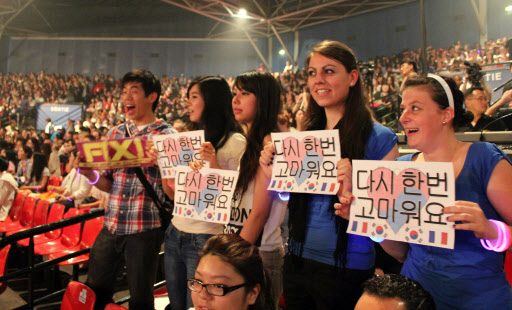
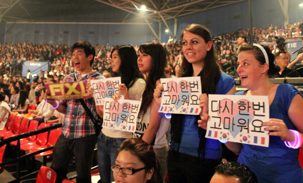

1996년 한국의 텔레비전 드라마가 중국에 수출되고, 2년 뒤에는 가요가 알려지면서 아시아를 중심으로 대한민국의 대중문화가 대중적 인기를 얻게된 현상을 일컫는다. 한류라는 용어는 한국의 대중문화가 알려지면서 대만, 중국, 한국 등에서 사용하기 시작하였으며, 중국에서 한국 대중문화에 대한 열풍이 일기 시작하자 2000년 2월 중국 언론에서 이러한 현상을 표현하기 위해 '한류'라는 용어를 사용하여 널리 알려졌다.
이후 한국 대중문화의 열풍은 중국뿐 아니라 타이완·홍콩·베트남·타이·인도네시아·필리핀 등 동남아시아 전역으로 확산되었다. 특히 2000년 이후에는 드라마·가요·영화 등 대중문화만이 아니라 김치·고추장·라면·가전제품 등 한국 관련 제품의 이상적인 선호현상까지 나타났는데, 포괄적인 의미에서는 이러한 모든 현상을 가리켜 한류라고 한다.
심지어 대중문화의 수용 차원을 넘어 한국의 가수·영화배우·탤런트, 나아가 한국인과 한국 자체에 애정을 느껴 한국어를 익히거나 한국 제품을 사려는 젊은이들까지 생겨났는데, 중국에서는 이들을 가리켜 '합한족(哈韓族)'이라는 신조어로 부른다.
2010년대에 이르러서 한국의 대중음악, 영화, 드라마, 게임 등이 아시아를 넘어 중남미와 북미권, 유럽까지 정착하고 있어 한류는 세계적인 현상이라고 할 수 있다.

 
